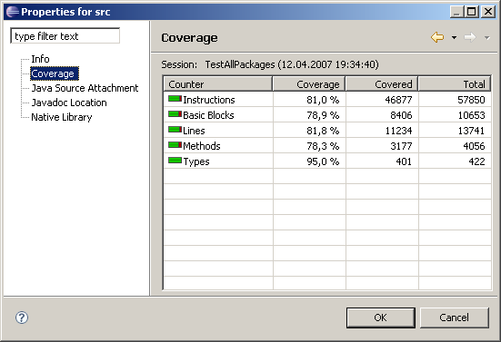

For each Java element (Java project, source folder, package, type or method) EclEmma provides a Coverage property page summarizing all coverage counters:

The Properties dialog can be activated from the context menu of for example the Package Explorer or Coverage view. The figures are only available if there is a active coverage session, e.g. after a coverage launch.